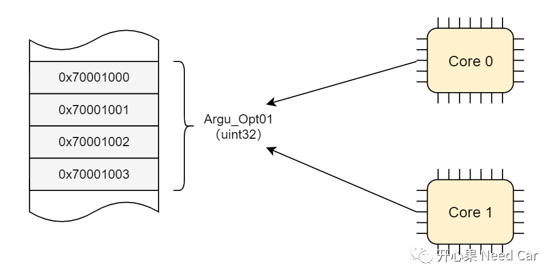
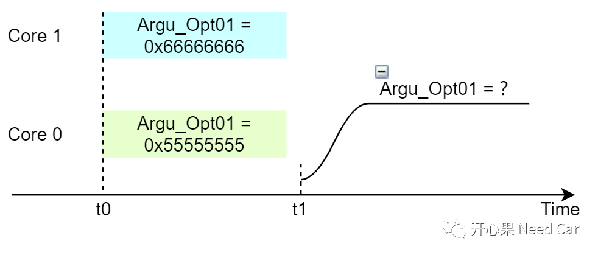
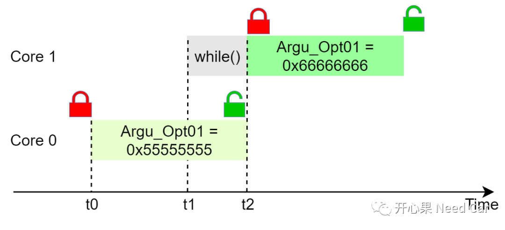
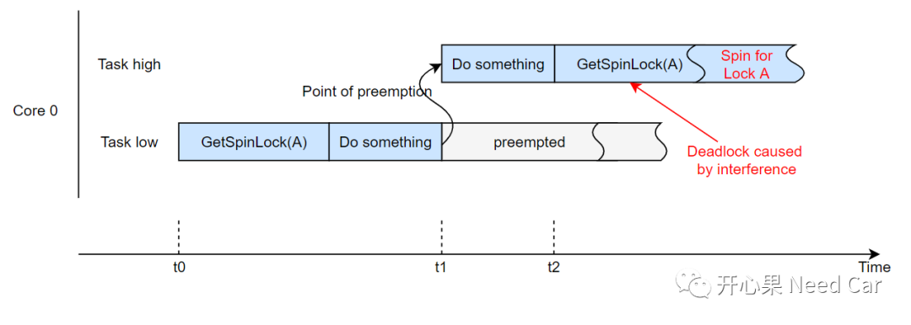
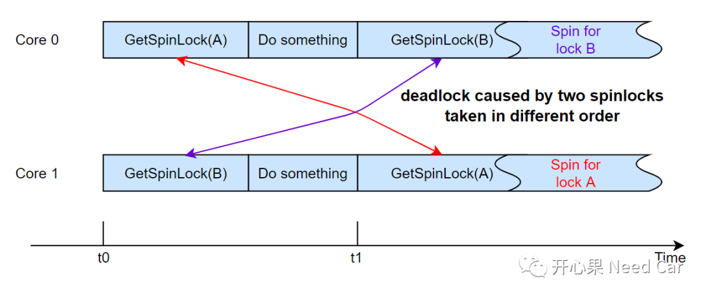

开心果 Need Car · 2022-09-02T18:28:00+08:00 · 微信原文
在多核系统中，经常会听到一个概念：Spinlock（自旋锁）。Spinlock的由来是什么呢？为什么需要Spinlock呢？
我们先思考这样一个问题：“多核系统中，假设Core0和Core1同时访问共享参数Argu_Opt01（uint32），且两者均可对该参数进行改写”，如下所示：

具体描述：
t0时刻，Core0和Core1同时访问参数Argu_Opt01，且Core 0操作Argu_Opt01 = 0x55555555，Core 1操作Argu_Opt01 = 0x66666666；
t1时刻，读取参数Argu_Opt01时，Argu_Opt01 = 0x55555555还是Argu_Opt01 = 0x66666666？如下所示：

既然，不同的Core同时访问同一个全局变量，会使得该全局变量一致性得不到保证，怎么办呢？答：互斥访问。就是说，不同的Core在访问同一个全局变量的时候，要分先后顺序，“谁先访问，谁使用，先访问的Core，对该变量上锁，使用完再解锁，变量在被锁住期间，其他Core一直等待”。
这种处理机制，生活中，也有类似的场景。比如：飞机上，乘客甲先进入WC，乘客甲进入WC后，首先将WC上锁，乘客甲开始使用WC。在乘客甲使用WC的期间，如果有乘客乙要使用WC，乘客乙只能等待，等待乘客甲使用完WC后，乘客乙才能使用。
软件开发中，如何实现“等待”呢？答：这个等待的过程可以用while()处理，Get/Release Spinlock代码示意如下所示：
IFX_INLINE boolean OS_TryToGetSpinLock(volatile unsigned long* address){if (*address == OS_spinlockFREE){return swap(address, OS_spinlockBUSY) == OS_spinlockFREE;}return FALSE;}IFX_INLINE void OS_GetSpinLock(unsigned long* address){/* waiting lock free */while (!OS_TryToGetSpinLock(address));}IFX_INLINE void Os_ReleaseSpinLock(unsigned long* address){*address = OS_spinlockFREE;}
Spinlock使用示意如下：
......OS_GetSpinLock(&Os_SpinlockSync);/* do something */Os_ReleaseSpinLock(&Os_SpinlockSync);......

同一Core中，是否可以使用Spinlock？
如上述，Spinlock的机制适用于多核系统，那么同一个Core中，是否可以使用Spinlock呢？答：不能。为什么不能呢？如下图：

不同核，Spinlock使用注意事项
当某个Core在轮询lock状态的时候，可能会被更高优先级的Task/ISR抢占，干扰当前获取lock状态的任务。为了避免获取lock状态的任务被抢占，可以使用Os_SuspendAllInterrupts()接口，挂起中断。
除了任务抢占需要注意以外，lock变量的使用顺序也需要提前定义，避免Core之间的互锁问题，如下所示：

t0时刻，Core0获取了lock A，Core1获取了lock B，之后各自执行任务；
t1时刻，Core0尝试获取lock B，Core1尝试获取lockA，由于Core0获取lock B时，Core1没有释放lock B，Core0需要等待。同样的，由于Core1获取lock A时，Core0没有释放lock A，Core1也需要等待，这样就使得Core0和Core1均在while()中，无法跳出程序，造成互锁。
往期精彩回顾